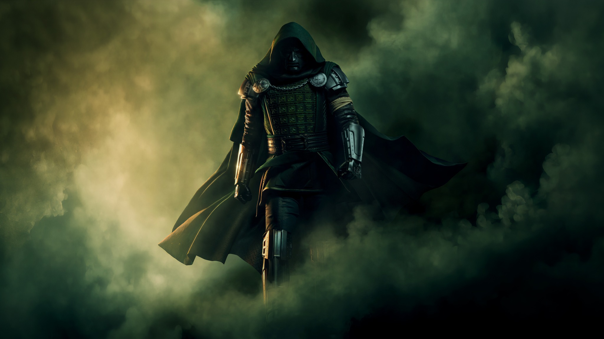
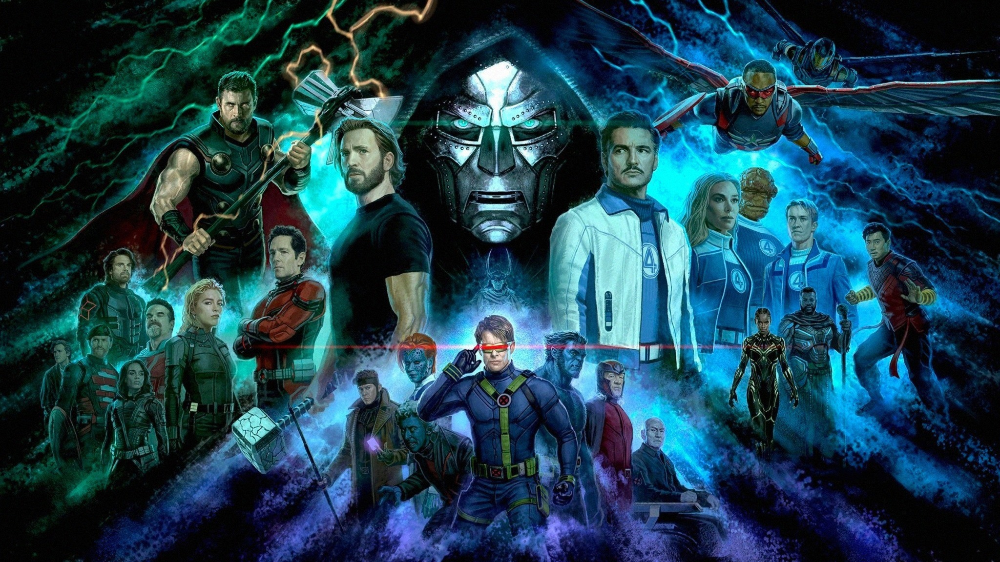
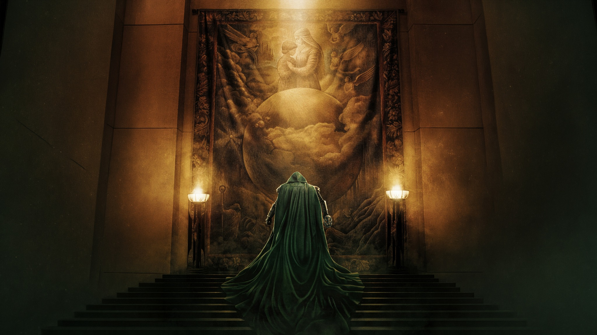
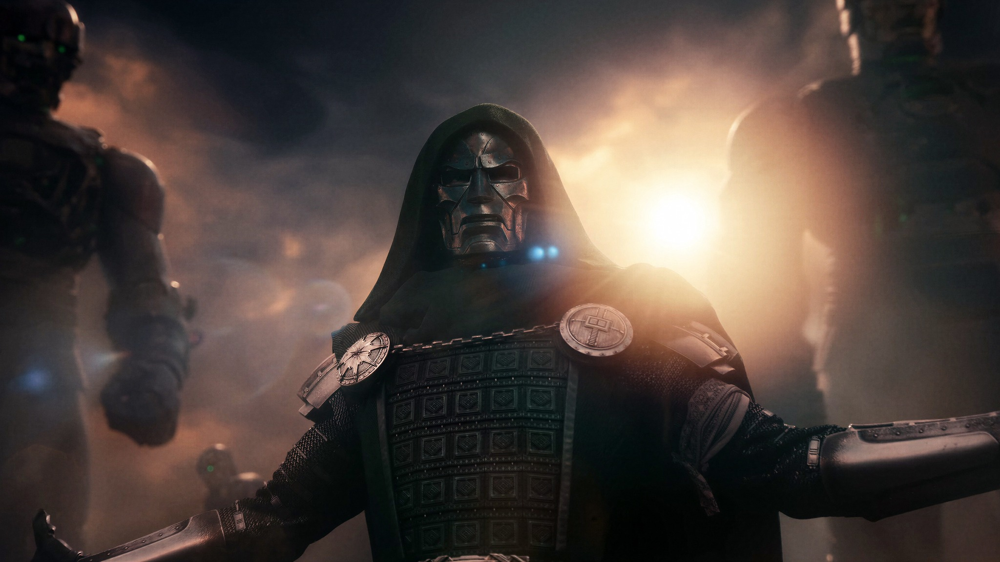
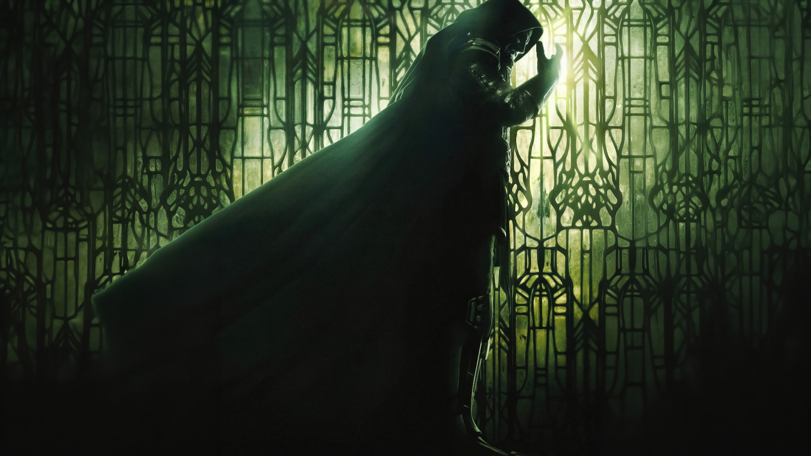
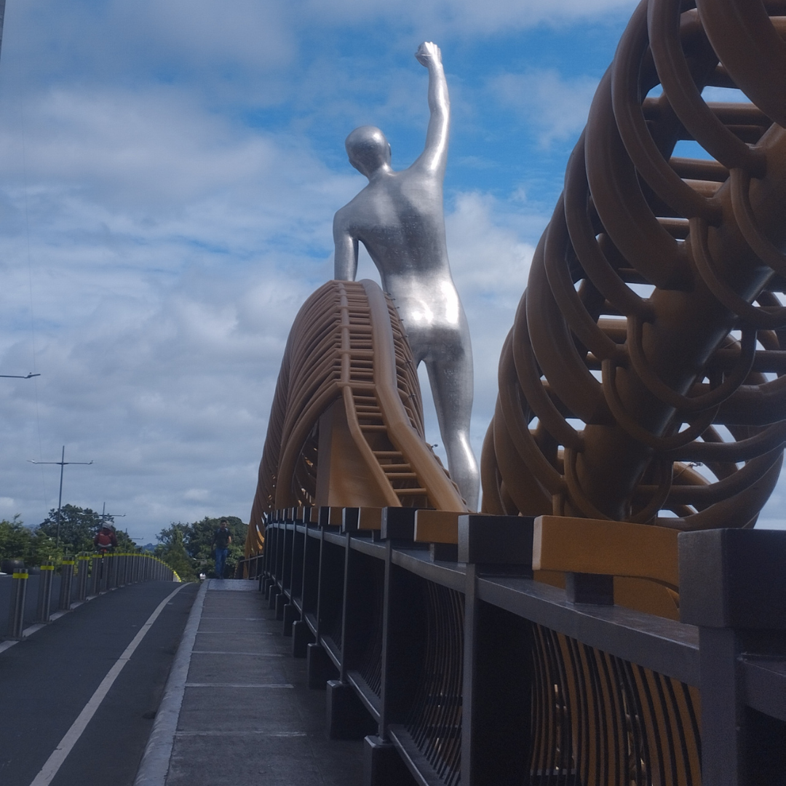

TECHNOLOGY
Exploring computers, programming, and the possibilities of Information Technology.
PERSONAL PORTFOLIO • 2026
Student • IT Enthusiast • Music & Marvel Fan
“A collection of my journey, interests, creativity, and experiences.”
GET TO KNOW ME
01 / INTRODUCTION
I’m a 20-year-old BSIT student from Pasig City studying at ICCT Colleges – Cainta. This website is a glimpse into who I am, the things I enjoy, and the experiences that have shaped me. From technology and photography to music and Marvel, these interests are part of what makes my journey unique.
02 / WHAT I ENJOY
Exploring computers, programming, and the possibilities of Information Technology.
Music is one of the things I enjoy and appreciate, especially legendary artists like Michael Jackson and Whitney Houston.
I enjoy Marvel's characters, heroes, stories, adventures, and cinematic universe.
Capturing places, moments, and experiences that are worth remembering.
03 / THE THINGS THAT INSPIRE ME

THE KING OF POP
Michael Jackson, known as The King of Pop, is one of the artists I admire most. I appreciate his creativity, unique artistry, unforgettable performances, music, and influence on global entertainment.
MICHAEL JACKSON — THE KING OF POP
THE VOICE
Whitney Houston is an artist I greatly admire for her extraordinary voice and emotional performances. Her powerful vocals, timeless songs, and ability to communicate emotion through music make her one of the most memorable voices in music.
WHITNEY HOUSTON — THE VOICE





HEROES • STORIES • IMAGINATION
I am also a Marvel fan. I enjoy the characters, heroes, stories, adventures, and cinematic universe that Marvel has created. The combination of imagination, action, storytelling, and memorable characters is what makes Marvel one of my favorite interests.
04 / MEMORIES
Some places, moments, and memories I've captured along the way.
.png)

.png)
.png)
Every picture tells a story, and every story becomes a memory.
— Cedric Reyes
05 / QUICK FACTS